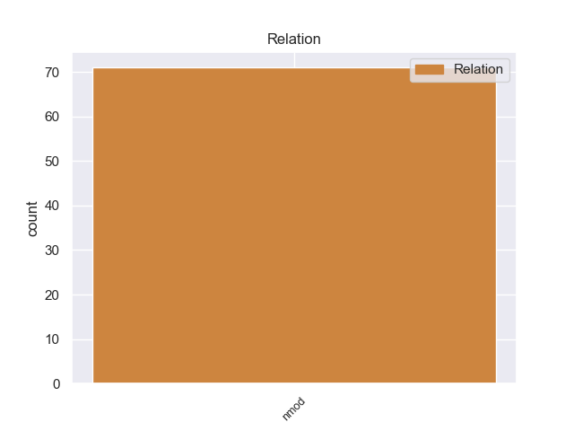
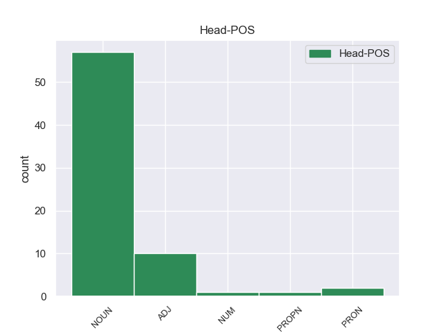
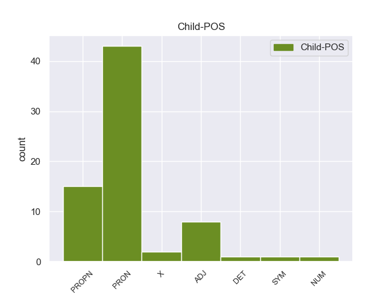

Distribution of features within this leaf



Agreement Rules sorted by frequency.
- When the dependent token is the nominal modifier(nmod) of the head token, and the head token is NOUN and the dependent token is PRON.
1 Επιθυμώ _ _ _ _ 0 _ _ _
2 επίσης _ _ _ _ 0 _ _ _
3 να _ _ _ _ 0 _ _ _
4 συγχαρώ _ _ _ _ 0 _ _ _
5 τον _ _ _ _ 0 _ _ _
6 εισηγητή _ _ _ _ 0 _ _ _
7 και _ _ _ _ 0 _ _ _
8 όλους _ _ _ _ 0 _ _ _
9 τους _ _ _ _ 0 _ _ _
10 συντάκτες _ _ _ _ 0 _ _ _
11 γνωμοδοτήσεων _ _ _ _ 0 _ _ _
12 για _ _ _ _ 0 _ _ _
13 την _ _ _ _ 0 _ _ _
14 εργασία _ _ _ _ 0 _ _ _
15 τους _ _ _ _ 0 _ _ _
16 σε _ _ _ _ 0 _ _ _
17 αυτό _ _ _ _ 0 _ _ _
18 που _ _ _ _ 0 _ _ _
19 εκ _ _ _ _ 0 _ _ _
20 πρώτης _ _ _ _ 0 _ _ _
21 όψεως _ _ _ _ 0 _ _ _
22 φαίνεται _ _ _ _ 0 _ _ _
23 ένα _ _ _ _ 0 _ _ _
24 πολύ _ _ _ _ 0 _ _ _
25 απλό _ _ _ _ 0 _ _ _
26 θέμα _ _ _ _ 0 _ _ _
27 , _ _ _ _ 0 _ _ _
28 αλλά _ _ _ _ 0 _ _ _
29 όταν _ _ _ _ 0 _ _ _
30 υπεισέρχεται _ _ _ _ 0 _ _ _
31 κανείς _ _ _ _ 0 _ _ _
32 σ _ _ _ _ 0 _ _ _
33 τις _ _ _ _ 0 _ _ _
34 λεπτομέρειες _ _ _ _ 0 _ _ _
35 και _ _ _ _ 0 _ _ _
36 σ _ _ _ _ 0 _ _ _
37 την _ _ _ _ 0 _ _ _
38 ανάλυσή ανάλυσή NOUN _ Gender=Fem|Number=Sing 0 _ _ _
39 του του PRON _ Case=Dat|Number=Sing|Person=3|PronType=Prs 38 nmod _ _
40 , _ _ _ _ 0 _ _ _
41 αποδεικνύεται _ _ _ _ 0 _ _ _
42 εξαιρετικά _ _ _ _ 0 _ _ _
43 δύσκολο _ _ _ _ 0 _ _ _
44 . _ _ _ _ 0 _ _ _
1 Jang _ _ _ _ 0 _ _ _
2 sugiere _ _ _ _ 0 _ _ _
3 una _ _ _ _ 0 _ _ _
4 reunión _ _ _ _ 0 _ _ _
5 de _ _ _ _ 0 _ _ _
6 trabajo _ _ _ _ 0 _ _ _
7 de _ _ _ _ 0 _ _ _
8 las _ _ _ _ 0 _ _ _
9 autoridades _ _ _ _ 0 _ _ _
10 de _ _ _ _ 0 _ _ _
11 la _ _ _ _ 0 _ _ _
12 Cruz _ _ _ _ 0 _ _ _
13 Roja _ _ _ _ 0 _ _ _
14 " _ _ _ _ 0 _ _ _
15 lo _ _ _ _ 0 _ _ _
16 antes _ _ _ _ 0 _ _ _
17 posible _ _ _ _ 0 _ _ _
18 " _ _ _ _ 0 _ _ _
19 para _ _ _ _ 0 _ _ _
20 preparar _ _ _ _ 0 _ _ _
21 la _ _ _ _ 0 _ _ _
22 cita _ _ _ _ 0 _ _ _
23 de _ _ _ _ 0 _ _ _
24 las _ _ _ _ 0 _ _ _
25 familias _ _ _ _ 0 _ _ _
26 separadas _ _ _ _ 0 _ _ _
27 en _ _ _ _ 0 _ _ _
28 la _ _ _ _ 0 _ _ _
29 estación estación NOUN _ Gender=Fem|Number=Sing 0 _ _ _
30 turística _ _ _ _ 0 _ _ _
31 de _ _ _ _ 0 _ _ _
32 el _ _ _ _ 0 _ _ _
33 Monte monte PROPN _ Gender=Masc|Number=Sing 29 nmod _ _
34 Kumgang _ _ _ _ 0 _ _ _
35 , _ _ _ _ 0 _ _ _
36 en _ _ _ _ 0 _ _ _
37 Corea _ _ _ _ 0 _ _ _
38 de _ _ _ _ 0 _ _ _
39 el _ _ _ _ 0 _ _ _
40 Norte _ _ _ _ 0 _ _ _
41 , _ _ _ _ 0 _ _ _
42 el _ _ _ _ 0 _ _ _
43 22 _ _ _ _ 0 _ _ _
44 de _ _ _ _ 0 _ _ _
45 septiembre _ _ _ _ 0 _ _ _
46 , _ _ _ _ 0 _ _ _
47 fiesta _ _ _ _ 0 _ _ _
48 tradicional _ _ _ _ 0 _ _ _
49 de _ _ _ _ 0 _ _ _
50 el _ _ _ _ 0 _ _ _
51 plenilunio _ _ _ _ 0 _ _ _
52 , _ _ _ _ 0 _ _ _
53 celebrada _ _ _ _ 0 _ _ _
54 por _ _ _ _ 0 _ _ _
55 ambas _ _ _ _ 0 _ _ _
56 Coreas _ _ _ _ 0 _ _ _
57 . _ _ _ _ 0 _ _ _
1 Είναι _ _ _ _ 0 _ _ _
2 μία _ _ _ _ 0 _ _ _
3 πρόταση πρόταση NOUN _ Gender=Fem|Number=Sing 0 _ _ _
4 τροπολογίας τροπολογίας ADJ _ Gender=Fem|Number=Sing 3 nmod _ _
5 ; _ _ _ _ 0 _ _ _
1 Για _ _ _ _ 0 _ _ _
2 τον _ _ _ _ 0 _ _ _
3 λόγο _ _ _ _ 0 _ _ _
4 αυτόν _ _ _ _ 0 _ _ _
5 είναι _ _ _ _ 0 _ _ _
6 ιδιαίτερα _ _ _ _ 0 _ _ _
7 σημαντικό _ _ _ _ 0 _ _ _
8 να _ _ _ _ 0 _ _ _
9 δεχθούμε _ _ _ _ 0 _ _ _
10 αυτές _ _ _ _ 0 _ _ _
11 τις _ _ _ _ 0 _ _ _
12 τροπολογίες _ _ _ _ 0 _ _ _
13 , _ _ _ _ 0 _ _ _
14 έτσι _ _ _ _ 0 _ _ _
15 ώστε _ _ _ _ 0 _ _ _
16 η _ _ _ _ 0 _ _ _
17 διατύπωση _ _ _ _ 0 _ _ _
18 της _ _ _ _ 0 _ _ _
19 οδηγίας _ _ _ _ 0 _ _ _
20 αυτής _ _ _ _ 0 _ _ _
21 να _ _ _ _ 0 _ _ _
22 είναι _ _ _ _ 0 _ _ _
23 ίδια ίδιo ADJ _ Gender=Fem|Number=Sing 0 _ _ _
24 με _ _ _ _ 0 _ _ _
25 αυτήν αυτήν PRON _ Case=Acc,Nom|Gender=Fem|Number=Sing|Person=3|PronType=Prs 23 nmod _ _
26 της _ _ _ _ 0 _ _ _
27 οδηγίας _ _ _ _ 0 _ _ _
28 για _ _ _ _ 0 _ _ _
29 τις _ _ _ _ 0 _ _ _
30 δημόσιες _ _ _ _ 0 _ _ _
31 προμήθειες _ _ _ _ 0 _ _ _
32 αγαθών _ _ _ _ 0 _ _ _
33 , _ _ _ _ 0 _ _ _
34 υπηρεσιών _ _ _ _ 0 _ _ _
35 και _ _ _ _ 0 _ _ _
36 την _ _ _ _ 0 _ _ _
37 ανάθεση _ _ _ _ 0 _ _ _
38 κατασκευαστικών _ _ _ _ 0 _ _ _
39 συμβάσεων _ _ _ _ 0 _ _ _
40 . _ _ _ _ 0 _ _ _
1 Madonna _ _ _ _ 0 _ _ _
2 colocó _ _ _ _ 0 _ _ _
3 estos _ _ _ _ 0 _ _ _
4 sencillos _ _ _ _ 0 _ _ _
5 dentro _ _ _ _ 0 _ _ _
6 de _ _ _ _ 0 _ _ _
7 Billboard _ _ _ _ 0 _ _ _
8 Hot _ _ _ _ 0 _ _ _
9 Dance _ _ _ _ 0 _ _ _
10 / _ _ _ _ 0 _ _ _
11 Music _ _ _ _ 0 _ _ _
12 Play _ _ _ _ 0 _ _ _
13 en _ _ _ _ 0 _ _ _
14 donde _ _ _ _ 0 _ _ _
15 tres tres NUM _ Number=Plur|NumType=Card 0 _ _ _
16 de _ _ _ _ 0 _ _ _
17 ellos él PRON _ Case=Acc,Nom|Gender=Masc|Number=Plur|Person=3|PronType=Prs 15 nmod _ _
18 ocuparon _ _ _ _ 0 _ _ _
19 el _ _ _ _ 0 _ _ _
20 primer _ _ _ _ 0 _ _ _
21 lugar _ _ _ _ 0 _ _ _
22 . _ _ _ _ 0 _ _ _
1 Ωστόσο _ _ _ _ 0 _ _ _
2 , _ _ _ _ 0 _ _ _
3 η _ _ _ _ 0 _ _ _
4 Ομάδα _ _ _ _ 0 _ _ _
5 μου _ _ _ _ 0 _ _ _
6 πιστεύει _ _ _ _ 0 _ _ _
7 πως _ _ _ _ 0 _ _ _
8 , _ _ _ _ 0 _ _ _
9 παρόλο _ _ _ _ 0 _ _ _
10 που _ _ _ _ 0 _ _ _
11 οι _ _ _ _ 0 _ _ _
12 ευρωσκεπτικιστές _ _ _ _ 0 _ _ _
13 της _ _ _ _ 0 _ _ _
14 δεξιάς _ _ _ _ 0 _ _ _
15 ενίστανται _ _ _ _ 0 _ _ _
16 σε _ _ _ _ 0 _ _ _
17 οποιαδήποτε _ _ _ _ 0 _ _ _
18 συνεργασία _ _ _ _ 0 _ _ _
19 σε _ _ _ _ 0 _ _ _
20 αυτόν _ _ _ _ 0 _ _ _
21 τον _ _ _ _ 0 _ _ _
22 τομέα _ _ _ _ 0 _ _ _
23 , _ _ _ _ 0 _ _ _
24 όσοι όσοι PRON _ Number=Plur 0 _ _ _
25 από _ _ _ _ 0 _ _ _
26 εμάς é PRON _ Number=Plur 24 nmod _ _
27 δεν _ _ _ _ 0 _ _ _
28 ανήκουμε _ _ _ _ 0 _ _ _
29 σ _ _ _ _ 0 _ _ _
30 την _ _ _ _ 0 _ _ _
31 δεξιά _ _ _ _ 0 _ _ _
32 και _ _ _ _ 0 _ _ _
33 ενδιαφερόμαστε _ _ _ _ 0 _ _ _
34 για _ _ _ _ 0 _ _ _
35 τις _ _ _ _ 0 _ _ _
36 ατομικές _ _ _ _ 0 _ _ _
37 ελευθερίες _ _ _ _ 0 _ _ _
38 , _ _ _ _ 0 _ _ _
39 θα _ _ _ _ 0 _ _ _
40 πρέπει _ _ _ _ 0 _ _ _
41 μεν _ _ _ _ 0 _ _ _
42 να _ _ _ _ 0 _ _ _
43 συμφωνήσουμε _ _ _ _ 0 _ _ _
44 σε _ _ _ _ 0 _ _ _
45 αυτά _ _ _ _ 0 _ _ _
46 τα _ _ _ _ 0 _ _ _
47 μέτρα _ _ _ _ 0 _ _ _
48 , _ _ _ _ 0 _ _ _
49 αλλά _ _ _ _ 0 _ _ _
50 σ _ _ _ _ 0 _ _ _
51 τη _ _ _ _ 0 _ _ _
52 συνέχεια _ _ _ _ 0 _ _ _
53 θα _ _ _ _ 0 _ _ _
54 πρέπει _ _ _ _ 0 _ _ _
55 να _ _ _ _ 0 _ _ _
56 ασκήσουμε _ _ _ _ 0 _ _ _
57 πίεση _ _ _ _ 0 _ _ _
58 σ _ _ _ _ 0 _ _ _
59 την _ _ _ _ 0 _ _ _
60 Επιτροπή _ _ _ _ 0 _ _ _
61 και _ _ _ _ 0 _ _ _
62 σ _ _ _ _ 0 _ _ _
63 το _ _ _ _ 0 _ _ _
64 Συμβούλιο _ _ _ _ 0 _ _ _
65 ώστε _ _ _ _ 0 _ _ _
66 να _ _ _ _ 0 _ _ _
67 επιτύχουμε _ _ _ _ 0 _ _ _
68 τη _ _ _ _ 0 _ _ _
69 θέσπιση _ _ _ _ 0 _ _ _
70 αυτών _ _ _ _ 0 _ _ _
71 των _ _ _ _ 0 _ _ _
72 εχεγγύων _ _ _ _ 0 _ _ _
73 των _ _ _ _ 0 _ _ _
74 πολιτών _ _ _ _ 0 _ _ _
75 . _ _ _ _ 0 _ _ _
1 Σχετικά _ _ _ _ 0 _ _ _
2 με _ _ _ _ 0 _ _ _
3 το _ _ _ _ 0 _ _ _
4 ζήτημα _ _ _ _ 0 _ _ _
5 της _ _ _ _ 0 _ _ _
6 σύμβασης _ _ _ _ 0 _ _ _
7 για _ _ _ _ 0 _ _ _
8 τα _ _ _ _ 0 _ _ _
9 λεωφορεία _ _ _ _ 0 _ _ _
10 σ _ _ _ _ 0 _ _ _
11 το _ _ _ _ 0 _ _ _
12 Ελσίνκι _ _ _ _ 0 _ _ _
13 , _ _ _ _ 0 _ _ _
14 σίγουρα _ _ _ _ 0 _ _ _
15 οι _ _ _ _ 0 _ _ _
16 αρχές _ _ _ _ 0 _ _ _
17 του _ _ _ _ 0 _ _ _
18 Ελσίνκι _ _ _ _ 0 _ _ _
19 ήταν _ _ _ _ 0 _ _ _
20 οι _ _ _ _ 0 _ _ _
21 αρμόδιες _ _ _ _ 0 _ _ _
22 για _ _ _ _ 0 _ _ _
23 να _ _ _ _ 0 _ _ _
24 αποφασίσουν _ _ _ _ 0 _ _ _
25 , _ _ _ _ 0 _ _ _
26 πριν _ _ _ _ 0 _ _ _
27 να _ _ _ _ 0 _ _ _
28 προκηρύξουν _ _ _ _ 0 _ _ _
29 το _ _ _ _ 0 _ _ _
30 διαγωνισμό _ _ _ _ 0 _ _ _
31 για _ _ _ _ 0 _ _ _
32 την _ _ _ _ 0 _ _ _
33 ανάθεση _ _ _ _ 0 _ _ _
34 της _ _ _ _ 0 _ _ _
35 σύμβασης _ _ _ _ 0 _ _ _
36 , _ _ _ _ 0 _ _ _
37 ποιο _ _ _ _ 0 _ _ _
38 είναι _ _ _ _ 0 _ _ _
39 το _ _ _ _ 0 _ _ _
40 βέλτιστο βέλτιστο ADJ _ Gender=Masc|Number=Sing 0 _ _ _
41 και _ _ _ _ 0 _ _ _
42 το _ _ _ _ 0 _ _ _
43 πιο _ _ _ _ 0 _ _ _
44 φιλικό _ _ _ _ 0 _ _ _
45 προς _ _ _ _ 0 _ _ _
46 το _ _ _ _ 0 _ _ _
47 περιβάλλον περιβάλλον ADJ _ Gender=Masc|Number=Sing 40 nmod _ _
48 λεωφορείο _ _ _ _ 0 _ _ _
49 το _ _ _ _ 0 _ _ _
50 οποίο _ _ _ _ 0 _ _ _
51 επιθυμούσαν _ _ _ _ 0 _ _ _
52 . _ _ _ _ 0 _ _ _
Disagree Examples:
1 Sin _ _ _ _ 0 _ _ _
2 embargo _ _ _ _ 0 _ _ _
3 , _ _ _ _ 0 _ _ _
4 era _ _ _ _ 0 _ _ _
5 rencoroso _ _ _ _ 0 _ _ _
6 , _ _ _ _ 0 _ _ _
7 avaro _ _ _ _ 0 _ _ _
8 , _ _ _ _ 0 _ _ _
9 cruel _ _ _ _ 0 _ _ _
10 , _ _ _ _ 0 _ _ _
11 y _ _ _ _ 0 _ _ _
12 orgulloso _ _ _ _ 0 _ _ _
13 , _ _ _ _ 0 _ _ _
14 así _ _ _ _ 0 _ _ _
15 Lisandro _ _ _ _ 0 _ _ _
16 se _ _ _ _ 0 _ _ _
17 hizo _ _ _ _ 0 _ _ _
18 impopular _ _ _ _ 0 _ _ _
19 en _ _ _ _ 0 _ _ _
20 toda _ _ _ _ 0 _ _ _
21 Grecia _ _ _ _ 0 _ _ _
22 , _ _ _ _ 0 _ _ _
23 promocionando _ _ _ _ 0 _ _ _
24 los _ _ _ _ 0 _ _ _
25 intereses _ _ _ _ 0 _ _ _
26 de _ _ _ _ 0 _ _ _
27 sus _ _ _ _ 0 _ _ _
28 amigos _ _ _ _ 0 _ _ _
29 y _ _ _ _ 0 _ _ _
30 manifestando _ _ _ _ 0 _ _ _
31 afán afán NOUN _ Gender=Masc|Number=Sing 0 _ _ _
32 de _ _ _ _ 0 _ _ _
33 venganza _ _ _ _ 0 _ _ _
34 contra _ _ _ _ 0 _ _ _
35 los él PRON _ Case=Acc|Gender=Masc|Number=Plur|Person=3|PrepCase=Npr|PronType=Prs 31 nmod _ _
36 que _ _ _ _ 0 _ _ _
37 le _ _ _ _ 0 _ _ _
38 desagradaban _ _ _ _ 0 _ _ _
39 . _ _ _ _ 0 _ _ _
1 Romme _ _ _ _ 0 _ _ _
2 partió _ _ _ _ 0 _ _ _
3 a _ _ _ _ 0 _ _ _
4 Rusia _ _ _ _ 0 _ _ _
5 en _ _ _ _ 0 _ _ _
6 1779 _ _ _ _ 0 _ _ _
7 y _ _ _ _ 0 _ _ _
8 vivió _ _ _ _ 0 _ _ _
9 allí _ _ _ _ 0 _ _ _
10 trabajando _ _ _ _ 0 _ _ _
11 para _ _ _ _ 0 _ _ _
12 la _ _ _ _ 0 _ _ _
13 familia _ _ _ _ 0 _ _ _
14 de _ _ _ _ 0 _ _ _
15 el _ _ _ _ 0 _ _ _
16 príncipe _ _ _ _ 0 _ _ _
17 Strogranov _ _ _ _ 0 _ _ _
18 en _ _ _ _ 0 _ _ _
19 San _ _ _ _ 0 _ _ _
20 Petersburgo _ _ _ _ 0 _ _ _
21 y _ _ _ _ 0 _ _ _
22 desarrollando _ _ _ _ 0 _ _ _
23 ideas _ _ _ _ 0 _ _ _
24 de _ _ _ _ 0 _ _ _
25 la _ _ _ _ 0 _ _ _
26 Ilustración _ _ _ _ 0 _ _ _
27 similares similar ADJ _ Number=Plur 0 _ _ _
28 a _ _ _ _ 0 _ _ _
29 la él PRON _ Case=Acc|Gender=Fem|Number=Sing|Person=3|PrepCase=Npr|PronType=Prs 27 nmod _ _
30 de _ _ _ _ 0 _ _ _
31 los _ _ _ _ 0 _ _ _
32 revolucionarios _ _ _ _ 0 _ _ _
33 franceses _ _ _ _ 0 _ _ _
34 , _ _ _ _ 0 _ _ _
35 según _ _ _ _ 0 _ _ _
36 expresa _ _ _ _ 0 _ _ _
37 en _ _ _ _ 0 _ _ _
38 ensayos _ _ _ _ 0 _ _ _
39 y _ _ _ _ 0 _ _ _
40 cartas _ _ _ _ 0 _ _ _
41 . _ _ _ _ 0 _ _ _
1 Una _ _ _ _ 0 _ _ _
2 grabación _ _ _ _ 0 _ _ _
3 entre _ _ _ _ 0 _ _ _
4 el _ _ _ _ 0 _ _ _
5 expresidente _ _ _ _ 0 _ _ _
6 de _ _ _ _ 0 _ _ _
7 Estados _ _ _ _ 0 _ _ _
8 Unidos _ _ _ _ 0 _ _ _
9 Richard _ _ _ _ 0 _ _ _
10 Nixon _ _ _ _ 0 _ _ _
11 y _ _ _ _ 0 _ _ _
12 John _ _ _ _ 0 _ _ _
13 Ehrlichman _ _ _ _ 0 _ _ _
14 , _ _ _ _ 0 _ _ _
15 uno _ _ _ _ 0 _ _ _
16 de _ _ _ _ 0 _ _ _
17 sus _ _ _ _ 0 _ _ _
18 más _ _ _ _ 0 _ _ _
19 cercanos _ _ _ _ 0 _ _ _
20 asesores asesor NOUN _ Gender=Masc|Number=Plur 0 _ _ _
21 en _ _ _ _ 0 _ _ _
22 la _ _ _ _ 0 _ _ _
23 Casa casa PROPN _ Gender=Fem|Number=Sing 20 nmod _ _
24 Blanca _ _ _ _ 0 _ _ _
25 , _ _ _ _ 0 _ _ _
26 reveló _ _ _ _ 0 _ _ _
27 en _ _ _ _ 0 _ _ _
28 el _ _ _ _ 0 _ _ _
29 año _ _ _ _ 0 _ _ _
30 1999 _ _ _ _ 0 _ _ _
31 , _ _ _ _ 0 _ _ _
32 que _ _ _ _ 0 _ _ _
33 el _ _ _ _ 0 _ _ _
34 cuestionado _ _ _ _ 0 _ _ _
35 hombre _ _ _ _ 0 _ _ _
36 de _ _ _ _ 0 _ _ _
37 negocios _ _ _ _ 0 _ _ _
38 Robert _ _ _ _ 0 _ _ _
39 Vesco _ _ _ _ 0 _ _ _
40 fue _ _ _ _ 0 _ _ _
41 protegido _ _ _ _ 0 _ _ _
42 por _ _ _ _ 0 _ _ _
43 el _ _ _ _ 0 _ _ _
44 gobierno _ _ _ _ 0 _ _ _
45 de _ _ _ _ 0 _ _ _
46 José _ _ _ _ 0 _ _ _
47 Figueres _ _ _ _ 0 _ _ _
48 Ferrer _ _ _ _ 0 _ _ _
49 . _ _ _ _ 0 _ _ _
1 Personalmente _ _ _ _ 0 _ _ _
2 , _ _ _ _ 0 _ _ _
3 ha _ _ _ _ 0 _ _ _
4 opinado _ _ _ _ 0 _ _ _
5 que _ _ _ _ 0 _ _ _
6 los _ _ _ _ 0 _ _ _
7 sindicatos _ _ _ _ 0 _ _ _
8 están _ _ _ _ 0 _ _ _
9 pendientes pendiente ADJ _ Number=Plur 0 _ _ _
10 de _ _ _ _ 0 _ _ _
11 lo él PRON _ Case=Acc|Gender=Masc|Number=Sing|Person=3|PrepCase=Npr|PronType=Prs 9 nmod _ _
12 que _ _ _ _ 0 _ _ _
13 ocurra _ _ _ _ 0 _ _ _
14 el _ _ _ _ 0 _ _ _
15 próximo _ _ _ _ 0 _ _ _
16 lunes _ _ _ _ 0 _ _ _
17 , _ _ _ _ 0 _ _ _
18 cuando _ _ _ _ 0 _ _ _
19 se _ _ _ _ 0 _ _ _
20 celebrará _ _ _ _ 0 _ _ _
21 un _ _ _ _ 0 _ _ _
22 pleno _ _ _ _ 0 _ _ _
23 extraordinario _ _ _ _ 0 _ _ _
24 en _ _ _ _ 0 _ _ _
25 la _ _ _ _ 0 _ _ _
26 Asamblea _ _ _ _ 0 _ _ _
27 para _ _ _ _ 0 _ _ _
28 aprobar _ _ _ _ 0 _ _ _
29 la _ _ _ _ 0 _ _ _
30 rebaja _ _ _ _ 0 _ _ _
31 salarial _ _ _ _ 0 _ _ _
32 a _ _ _ _ 0 _ _ _
33 los _ _ _ _ 0 _ _ _
34 funcionarios _ _ _ _ 0 _ _ _
35 y _ _ _ _ 0 _ _ _
36 empleados _ _ _ _ 0 _ _ _
37 de _ _ _ _ 0 _ _ _
38 empresas _ _ _ _ 0 _ _ _
39 públicas _ _ _ _ 0 _ _ _
40 de _ _ _ _ 0 _ _ _
41 la _ _ _ _ 0 _ _ _
42 Administración _ _ _ _ 0 _ _ _
43 regional _ _ _ _ 0 _ _ _
44 , _ _ _ _ 0 _ _ _
45 entre _ _ _ _ 0 _ _ _
46 los _ _ _ _ 0 _ _ _
47 que _ _ _ _ 0 _ _ _
48 se _ _ _ _ 0 _ _ _
49 encuentran _ _ _ _ 0 _ _ _
50 los _ _ _ _ 0 _ _ _
51 trabajadores _ _ _ _ 0 _ _ _
52 de _ _ _ _ 0 _ _ _
53 Metro _ _ _ _ 0 _ _ _
54 . _ _ _ _ 0 _ _ _
1 Son _ _ _ _ 0 _ _ _
2 muy _ _ _ _ 0 _ _ _
3 comunes _ _ _ _ 0 _ _ _
4 los _ _ _ _ 0 _ _ _
5 sistemas sistema NOUN _ Gender=Masc|Number=Plur 0 _ _ _
6 con _ _ _ _ 0 _ _ _
7 énfasis _ _ _ _ 0 _ _ _
8 tonal _ _ _ _ 0 _ _ _
9 en _ _ _ _ 0 _ _ _
10 sílabas _ _ _ _ 0 _ _ _
11 enfatizadas _ _ _ _ 0 _ _ _
12 , _ _ _ _ 0 _ _ _
13 como _ _ _ _ 0 _ _ _
14 en _ _ _ _ 0 _ _ _
15 panoano panoano X _ Gender=Masc|Number=Sing 5 nmod _ SpaceAfter=No
16 , _ _ _ _ 0 _ _ _
17 witotoano _ _ _ _ 0 _ _ _
18 y _ _ _ _ 0 _ _ _
19 chibchano _ _ _ _ 0 _ _ _
20 . _ _ _ _ 0 _ _ _